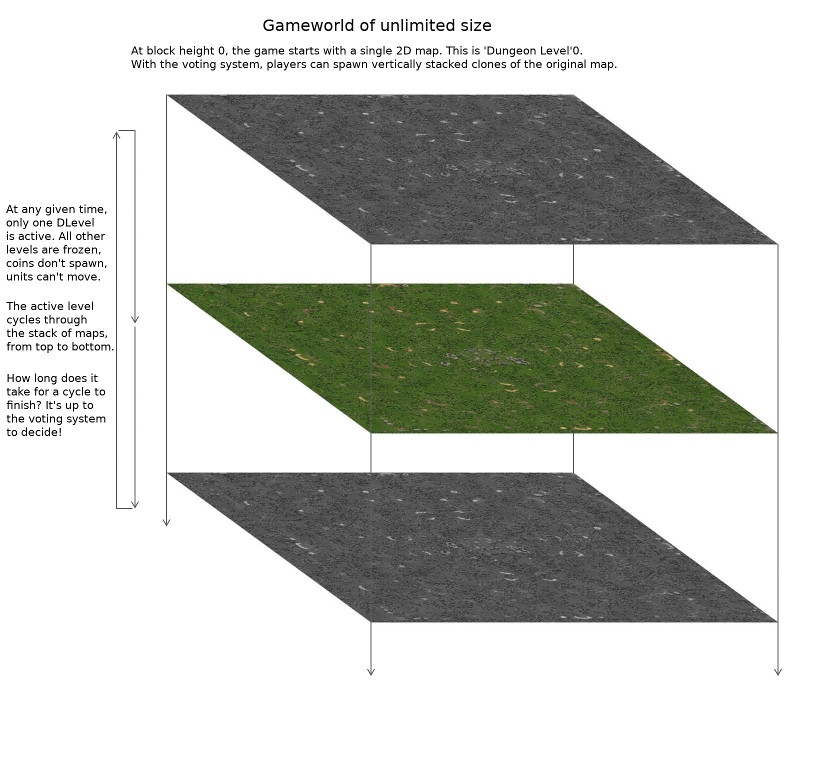
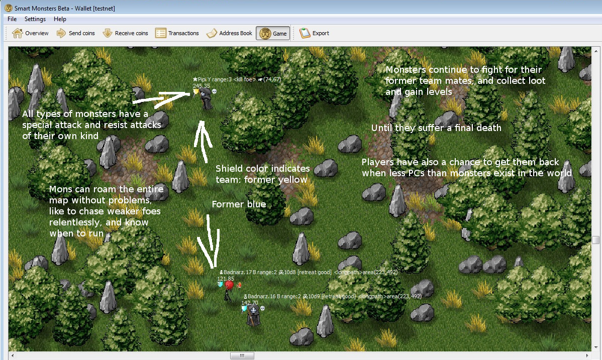

What's this about...
Smartmonsters is a fully decentralized game, with the ability to mine its own cryptocurrency, Alifecoin.
Fully decentralized means that there are no servers, a game client is always an Alifecoin node, and no authority outside of network consensus exists.
Game rules are chosen so that the game world can never be dominated by bots. To mine coins through the game, coin holders need human common sense and strategic thinking, but not much in terms of time expenditure.
The number of transactions generated by players is very small, making the game scaleable with no blockchain bloat. All coin holders can participate at the same time.
Part of the network consensus is a voting, self-governing and self-funding system: Players can change size and macro-economic parameters of the game world,
enforce hardforks, and through majority vote control coins owned by game entities (i.e NPCs) that are part of the consensus.

History
The first crypto-currency that achived to build a game within the blockchain, playable using only the coin wallet, and more importantly a game that could "mine", with most coins generated through the game was Huntercoin. The original purpose of Huntercoin was "a coin that everyone can mine, without powerful hardware" and such a coin would become most widespread and hence most valuable.
This was however negated because "human mining" capability is proportional to the time invested (actually steeper than that), so that the most well organized player group and/or the best bot could, and did, squeeze out anyone else.
Smart Monsters on the Blockchain
In the SmartMonsters prototype, a network-wide AI layer that can (and must) be used by all game entities has been created and rules have been changed in order to make the difference between players who can only play for a few minutes per day, and players who can invest unlimited time, as small as possible.
Client-side bots are now useless. (they would need to think strategically)
And loot-dropping monster NPCs make their appearance (on the blockchain) for our hunting pleasure.
